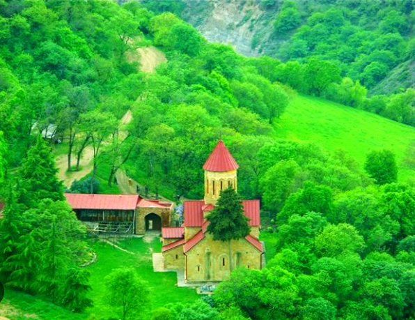

ქვემო ქართლი აღმოსავლეთ საქართველოში მდებარე მხარეა, რომელიც ისტორიულ-გეოგრაფიული პროვინციების ქვემო ქართლის და თრიალეთის ტერიტორიებს მოიცავს. ეს მხარე უდიდეს წარსულს ინახავს პრეისტორიული ხანიდან დღემდე. ქვემო ქართლში აღმოაჩინეს 1 800 000 წლის პირველი ევროპელებიც - ზეზვა და მზია. აქ არის ძვ.წ. IV ათასწლეულის საყდრისის ოქროს მაღაროც. ქვემო ქართლი მდიდარია სხვადასხვა პერიოდის ძალიან საინტერესო კულტურული ძეგლებითა და ულამაზესი, მრავალფეროვანი ბუნებით, ტყეებით, ტბებით, მინერალური და თერმული წყლებითა და კურორტებით.
ქვემო ქართლი უძველესი ისტორიის მქონე მხარეა. ამ რეგიონმა კაცობრიობის ფაქტობრივად ყველა ეტაპის ნაკვალევი შემოგვინახა. აქ ჯერ კიდევ 1 800 000 წლის წინ ცხოვრობდნენ ადამიანები. დმანისში აღმოჩენილ პირველ ევროპელებს, ზეზვასა და მზიას, როგორც სახეობას, მსოფლიო ქართველი ადამიანის (ჰომო გეორგიკუს) სახელით იცნობს. ქვემო ქართლის ტერიტორია უძველესი დროიდანვე დასახლებული იყო ქართველური ტომებით, რომელთა ხანგრძლივი ურთიერთკავშირისა და ურთიერთშერწყმის შედეგად წარმოიშვა ქართველი ხალხი. აქ მოსახლე ტომებიდან წყაროები იცნობენ ქართველურ ტომ გუგარებს, იგივე გოგარებს. განვითარებასთან ერთად სხვადასხვა ეტაპზე აქ იქმნებოდა სხვადასხვა სახელმწიფოებრივი წარმონაქმნები. VII-XI სს-ში ქვემო ქართლის ტერიტორიაზე შეიქმნა თბილისის საამირო, კლდეკარის საერისთავო და ტარიშ-ძორაგეტის სამეფო. XII-XIII საუკუნეებში აქ გაგისა და ლორის სასაზღვრო საერისთავოები იყო. მონღოლების ლაშქრობის შემდეგ საქართველომ დაკარგა ხუნანის საერისთავო და სახელმწიფო საზღვარმა ქცია-მტკვრის შესაყარზე გადაინაცვლა. XV საუკუნიდან დაიწყო მომთაბარე თურქმენული ტომების ჩამოსახლება. ამავე პერიოდში ქვემო ქართლში შეიქმნა სათავადოები: საბარათიანო, საორბელიანო და სხვა. XVII საუკუნეში შაჰ აბასმა დებედის ხეობაში ბორჩალოს მომთაბარე ტომი ჩამოასახლა და ლორის სახანო დააარსა. XVIII საუკუნეში ლეკი ფეოდალების თარეშის გამო ქვემო ქართლი მკვიდრი მოსახლეობისაგან თანდათან დაიცალა, მათი დიდი ნაწილი მტერს შეეწირა, ნაწილი კი საქართველოს სხვა კუთხეებში გაიხიზნა. მათ ადგილს უცხოტომელები იკავებდნენ, რაც განაპირობებს ამ მხარის ეთნიკურ სიჭრელეს. ქვემო ქართლი საქართველოში ქრისტიანობის გავრცელების ერთ-ერთი კერა იყო. სწორედ ამით აიხსნება ამ მხარეში ეკლესია-მონასტრების სიუხვე. აქ ასევე მდებარეობდა ქართველ მეფეთა საზაფხულო რეზიდენციები.
ქვემო ქართლი აღმოსავლეთ საქართველოში მდებარეობს და იგი შემოსაზღვრულია თრიალეთის, ჯავახეთისა და ბამბაკ-ერევნის ქედებით. მას აღმოსავლეთით ესაზღვრება კახეთის, ჩრდილოეთით შიდა ქართლის და მცხეთა-მთიანეთის, დასავლეთით სამცხე-ჯავახეთის რეგიონები, ხოლო სამხრეთით სომხეთი და აზერბაიჯანი. ქვემო ქართლის ადმინისტრაციული ცენტრია რუსთავი. იგი რუსთავის გარდა მოიცავს ექვს ადმინისტრაციულ ერთეულს, ესენია: ბოლნისი, გარდაბანი, დმანისი, თეთრიწყარო, მარნეული და წალკა.

ქვემო ქართლი განლაგებულია ნახევრად უდაბნო, მშრალი სუბტროპიკული და მაღალმთიანი ალპური ზონის საზღვრებში. მის ლანდშაფტს ძირითადად ველები და ტყეველები შეადგენს. ქვემო ქართლის უმსხვილესი მდინარეებია მტკვარი, ხრამი და ალგეთის ქვემო დინებები. რეგიონის ტერიტორიაზე გვხვდება ტბებიცა და წყალსაცავებიც. ქვემო ქართლის ბარში ნოტიო სუბტროპიკული და სუბტროპიკულ-კონტინენტური ჰავაა, ჯავახეთის ქედის მთიან რეგიონში ჰავა ზომიერად ნოტიოა, წალკის მიდამოებში კი ზომიერად ნოტიოდან მშრალ სუბტროპიკულზე გარდამავალი ჰავაა. რეგიონში საშუალო წლიური ტემპერატურა 15.3℃-ა, იანვრის საშუალო ტემპერატურა - 4℃, ხოლო ივლისის - 25.2℃.
ქვემო ქართლი მდიდარი კულტურის მქონე მხარეა, აქ მრავლადაა არქეოლოგიური ძეგლები, ეკლესია-მონასტრები და ციხესიმაგრეები. მსოფლიოს ყურადღებას იპყრობს დმანისის ნაქალაქარი მრავალსაუკუნოვანი კულტურული ფენებით. ქვემო ქართლშია ეგვიპტის პირამიდების პერიოდის ყორღანები სარიტუალო გზებით, სადაც მნიშვნელოვანი და მაღალმხატვრული ღირებულების სამკაულები, ჭურჭელი და სხვადასხვა დანიშნულების ნივთებია აღმოჩენილი. მდიდარ კულტურულ მემკვიდრეობასთან ერთად ქვემო ქართლი ბუნების სილამაზითაც გამოირჩევა. აქ ნახავთ ულამაზეს კანიონებს, ჩანჩქერებს, ალპურ მდელოებსა და ფერად-ფერად უდაბნოშიც კი იმოგზაურებთ.
translate to englesh